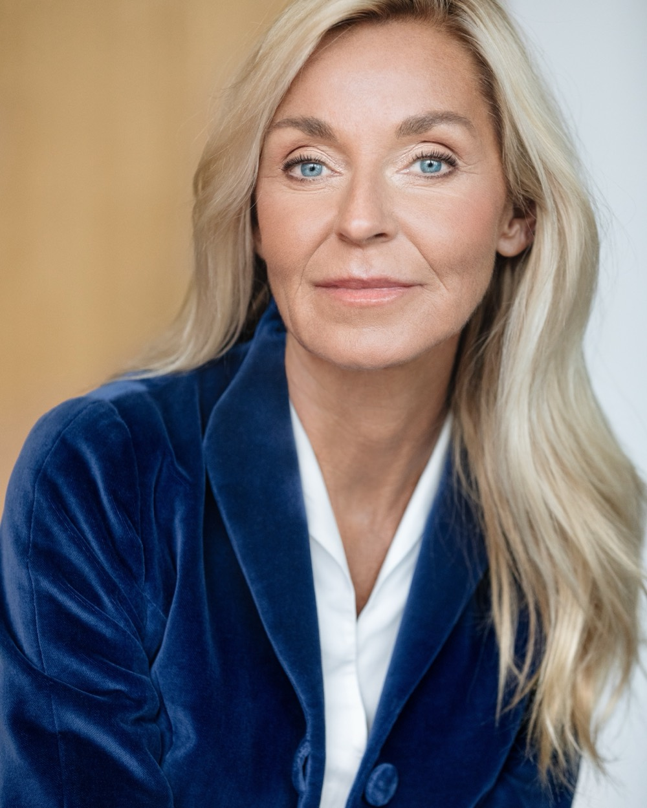

Executive Diagnostics
Fundierte Auswahl zu und über potenzielle Führungspersönlichkeiten oder bestehende Top-Level-Teams gehört zu den wichtigsten Entscheidungen für den Erfolg eines Unternehmens.
Mehr erfahrenExecutive Diagnostics · Leadership Development · Transformation
Wir begleiten Top-Managerinnen, Top-Manager und Senior Executives durch die zunehmend komplexeren Herausforderungen moderner Unternehmensführung — für das C-Level sowie die Ebenen n-1 und n-2.

Was uns auszeichnet
Unsere Beratungs- und Begleitungsexpertise beruht auf langjähriger Erfahrung auf Vorstands-, Aufsichtsrats- und Konzernleitungsebene. Wir verstehen die aktuelle Dynamik anspruchsvoller Unternehmensfelder aus unserer eigenen praktischen Arbeit.
Unser Angebot vereint Executive Coaching, Führungskräfteentwicklung, Management-Diagnostik und Sparring auf höchstem Niveau. Wir bieten professionelle Beratungs- und Begleitungsexpertise für das C-Level sowie die Ebenen n-1 und n-2.
Unsere Leistungsfelder
Fundierte Auswahl zu und über potenzielle Führungspersönlichkeiten oder bestehende Top-Level-Teams gehört zu den wichtigsten Entscheidungen für den Erfolg eines Unternehmens.
Mehr erfahrenWir begleiten Führungspersönlichkeiten und Führungsteams in anspruchsvollen Transformations- und Entwicklungsphasen – von der Übernahme einer neuen Verantwortung bis zur Gestaltung komplexer Veränderungsprozesse.
Mehr erfahrenEntscheidend für den Unternehmenserfolg sind neben Führung und Unternehmenskultur die Fähigkeit einer High-Performance-Organisation, komplexe Veränderungen schnell und konsequent umzusetzen.
Mehr erfahrenUnsere Kompetenz
Unsere Branchenkenntnis erstreckt sich über Mobilität und Verkehr, Gesundheitssektor, Finanzdienstleistungen, Handel und Unternehmensberatung und Politik, national und international.
Wer wir sind
Dr. Ursula Schütze-Kreilkamp bringt ihre Erfahrungen ein als Head of Group Executives, Aufsichtsrätin und in akademischer Lehrtätigkeit. Als Ärztin und Fachärztin sowie Top Managerin ergänzt sie diese Erfahrung aus verschiedenen „Welten“. Dies prägt ihren wissenschaftlich fundierten und zugleich pragmatischen, praxisnahen Beratungsstil.
Vollständiges ProfilRudolf Bäumler, Diplom-Psychologe mit solidem betriebswirtschaftlichem Wissen, Trainer und Coach mit tiefer Expertise in Eignungsdiagnostik, strategischer HR- und Unternehmensberatung auf Top Management Level. Dies ermöglicht den Aufbau und die Gestaltung einer auf klarem Urteilsvermögen fußenden, vertrauensvollen und business-orientierten Kundenbeziehung.
Vollständiges ProfilUnsere Philosophie
In unserer GbR arbeiten wir gleichberechtigt, uns ergänzend um unsere unterschiedlichen Erfahrungshintergründe und Perspektiven — so ermöglichen wir vertrauensvolle Beratung auf Basis langjähriger Managementerfahrung in verschiedenen Branchen.
Kontakt
Sprechen wir — vertraulich.
Für ein erstes Gespräch erreichen Sie beide Partner direkt, telefonisch oder per E-Mail.